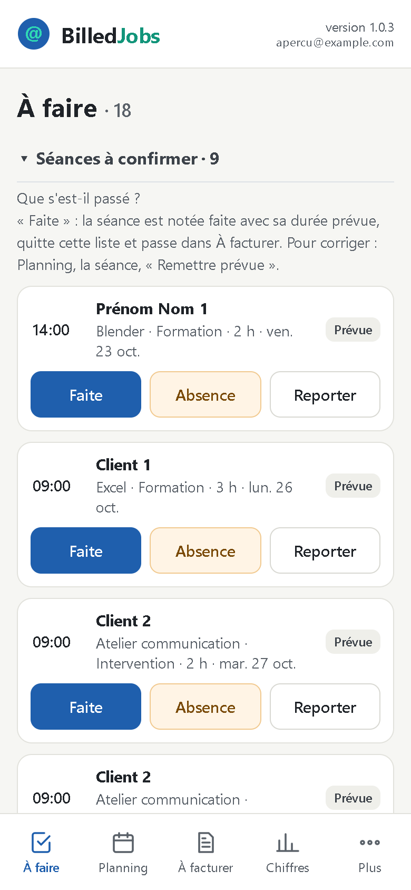
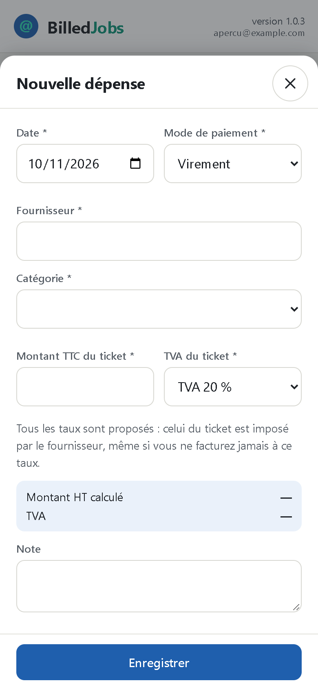
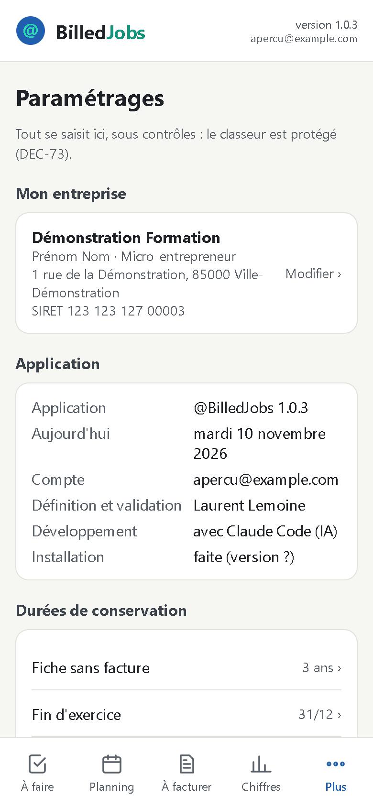

Découvrir @BilledJobs
Accueil
Découvrir @BilledJobs
Accueil
Bienvenue
@BilledJobs suit votre activité, du rendez-vous au paiement
- vos séances prévues et faites ;
- ce qu'il reste à facturer ;
- les paiements attendus et en retard ;
- vos dépenses ;
- vos chiffres, dont la déclaration URSSAF.
Sur téléphone, tablette et ordinateur. Touchez › pour avancer.
Ouvrir
Une page d'accueil, un bouton
- Touchez l'icône @BilledJobs, ou ouvrez billedjobs.github.io/jon.
- Touchez Ouvrir @BilledJobs.
- Vérifiez votre compte Google, affiché sous le numéro de version.
Les écrans
Quatre boutons en bas de l'écran

Plus donne le reste : Clients, Dépenses, Journal, Paramétrages.
Une séance
Prévoir une séance

- + Séance, puis la date et le client.
- La prestation est proposée pour vous : celle de la dernière fois pour ce client, sinon la seule de son activité habituelle.
- Heure, durée, type, modalité : enregistrer.
Les créneaux déjà pris s'affichent sous la date : deux séances ne se chevauchent jamais.
Après la séance
Dire ce qui s'est passé, d'un appui

Une séance passée encore « prévue » attend dans À faire, sous « Séances à confirmer » :
- Faite : elle part dans À facturer.
- Absence : « facturer quand même » si vous la facturez.
- Reporter : une nouvelle séance est proposée, la semaine suivante.
Rien n'est jamais effacé : une séance annulée reste visible, grisée.
Facturer
Préparer, facturer ailleurs, noter ici

- À facturer : le récapitulatif du client, prêt. Copier le récapitulatif
- Faites la facture dans votre logiciel de facturation.
- Marquer facturée : numéro, date, TVA, délai. L'échéance est calculée.
Être payé
Suivre les paiements

À facturer › En attente : échéance et reste dû de chaque facture.
- Paiement reçu : date et montant proposés, le mode à choisir.
- Payée en entier, la facture passe dans « Payées ».
En retard, elle passe en rouge et s'affiche aussi dans À faire.
Les dépenses
Le ticket, tel qu'il est

+ Dépense : date, fournisseur, catégorie, montant TTC du ticket, taux de TVA. Le HT est calculé.
Une dépense annulée reste visible, barrée, et ne compte plus.
Vos chiffres
Où en êtes-vous ?

- À traiter maintenant : retards, rappels, séances à confirmer.
- Ce qu'il reste à rentrer : à facturer, en attente, en retard.
- Le mois, le trimestre, l'année, 12 mois glissants.
- La déclaration URSSAF : le chiffre à déclarer, un rappel, puis « Marquer déclarée ».
Votre agenda
Les séances dans Google Agenda
Chaque séance prévue devient un rendez-vous de l'agenda « BilledJobs », sans prix. Toutes les 10 minutes, dans les deux sens :
- vous déplacez le rendez-vous : la séance suit ;
- vous le supprimez : la séance passe « annulée », jamais effacée ;
- vous annulez la séance : le rendez-vous disparaît.
Sans attendre : Plus › Synchroniser l'agenda.
Le lundi matin
Un rapport par e-mail, vers 7 h
Chaque lundi : vos alertes et les chiffres de la semaine, même quand tout est à jour (« rien à traiter »).
Le bouton de l'e-mail ouvre directement l'application.
Vos chiffres, en détail
Quatre onglets, la période de votre choix
Période : le mois, le trimestre, l'année ou 12 mois glissants. Chaque bloc se replie, son chiffre clé reste visible.
Paramétrages
Votre application, réglée pour vous

Plus › Paramétrages, la roue crantée :
- Mon entreprise : identité, SIRET ;
- Prestations : ce que vous vendez, avec leur prix horaire ;
- Listes : activités, types de séance, modalités, modes de paiement, catégories de dépenses, taux de TVA ;
- Seuils et alertes, régime de TVA, déclaration URSSAF ;
- E-mail, agenda et Drive : vos alertes.
Mode démonstration
Essayer sans toucher à vos données
Plus › Paramétrages › Mode démonstration : Oui.
- L'application montre un exemple complet, inventé : clients, séances, factures, paiements, dépenses et chiffres.
- Un bandeau le rappelle en permanence : données fictives, rien n'est enregistré.
- Seul votre compte passe en démonstration ; vos e-mails et votre agenda ne changent pas.
À retenir
Trois règles, et c'est tout
- Tout se saisit dans l'application, jamais dans le classeur Google : elle contrôle chaque champ.
- Rien ne s'efface : on annule, on désactive. Le Journal garde la trace de tout.
- Un doute ? Le mode opératoire répond, geste par geste, avec les écrans ; chapitre « Si quelque chose ne va pas ».